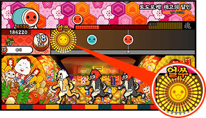
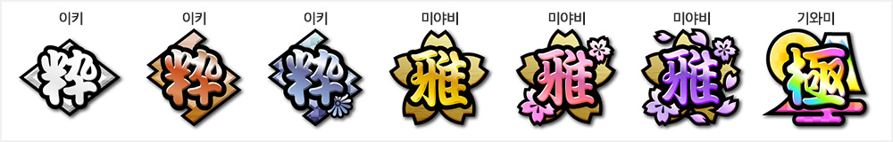
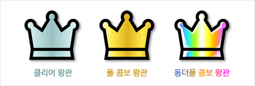

음표 종류

빨간 음표는 북 면을 두드리자.

파란 음표는 북 테를 두드리자

크고 빨간 음표는 북 면을 강하게 두드리자

크고 파란 음표는 북 테를 강하게 두드리자

노란 음표는 북 면을 연타하자

크고 노란 음표는 북 면을 강하게 연타하자

풍선 음표
풍선이 터질 때까지 연타하자

손잡기 음표
이 음표가 나타나면… 둘이서 함께 두드리자!

박 음표
박에 쓰인 숫자만큼 연타하자
키보드 이용방법

...
빨간 음표는 1P [F][J] / 2P [V][N] 키를 누르자
파란 음표는 1P [D][K] / 2P [C][M] 키를 누르자
크고 빨간 음표는 1P [F][J] / 2P [V][N] 키를 누르자
크고 파란 음표는 1P [D][K] / 2P [C][M] 키를 누르자
노란 음표는 1P [D][F][J][K] / 2P [C][V][N][M] 키를 연속으로 누르자
크고 노란 음표는 1P [D][F][J][K] / 2P [C][V][N][M] 키를 연속으로 누르자
풍선 음표
풍선이 터질 때까지 1P [F][J] / 2P [V][N] 키를 연속으로 누르자
손잡기 음표
이 음표가 나타나면… 둘이서 함께 두드리자!
박 음표
박에 쓰인 숫자만큼 1P [F][J] / 2P [V][N] 키를 연속으로 누르자
타이밍을 맟춰서 북을 두드리자

연주 중 표시되는 "얼쑤", "좋다", "에구"는 음표가 테두리에서 벗어나지 않고 얼마나 정확히 연주되었는지를 판정하는 표시입니다.완벽한 타이밍으로 연주하면 "얼쑤",
조금 벗어나면 "좋다", 크게 벗어나면 "에구"로 판정됩니다.
고득점을 얻으려면 "얼쑤" 판정을 받도록 타이밍에 맞춰 연주하세요!
스코어 랭크는 총 7단계가 있으며, 粋【이키】, 雅【미야비】, 極【기와미】 등의 종류가 있습니다.
하기 화면에서 오른쪽일수록 상위 랭크를 의미합니다.

풀 콤보로 클리어하면 풀 콤보 왕관이 표시됩니다.
모든 음표를 "얼쑤"로 연주하면 동더풀 콤보 왕관이 됩니다.


Nojiiro Account를 이용해 플레이하면
종합 성적 패널에서 획득한 스코어 랭크나 왕관
목록을 확인할 수 있습니다.


Custom Patch From NOPLUS & ©Bandai Namco Entertainment Inc.